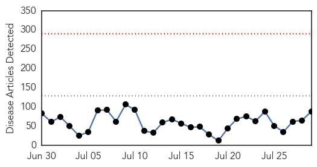
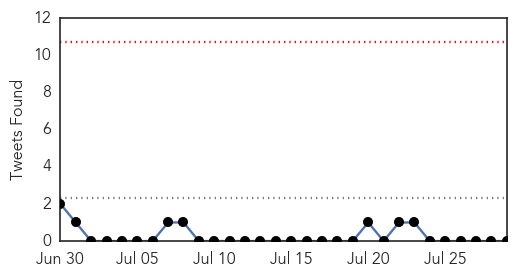
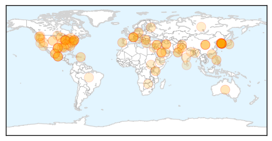
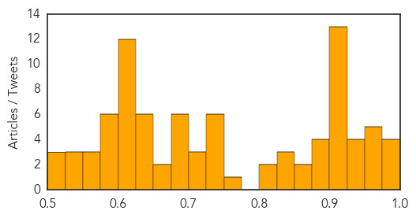

Toggle navigation
Early Warning
Daily Alerts
Unknown
Jul 29, 2015
Compare to:
-
Dengue Fever
Hemmorhagic Fever
Mold/Fungal Infection
Influenza
Meningitis
Pertussis / Whooping Cough
Middle East Respiratory Syndrome
Cholera
Hepatitis
Chikungunya
Yellow Fever
Bubonic Plague
West Nile Virus
Swine Flu
Ebola
Measles
Mumps
30 Day Trends
Web: 0
alerts
, 0
warnings
Twitter: 0
alerts
, 0
warnings
Top Articles:
Showing top 50 articles...
0.988
After Mers, Korea vows hospital culture reform
0.983
MERS Outbreak In South Korea Finally Ends; What’s Next For Asia’s Fourth Largest Economy?
0.979
Legionnaire's disease outbreak: 7 dead - Fox 5 NY
0.978
South Korea declares end to MERS outbreak
0.966
South Korea declares 'de facto end' to Mers virus
0.962
Number of Legionnaires' disease cases in Bronx outbreak rises to 46, city says
0.959
First MERS vaccine to be tested in monkeys shows promise
0.959
South Korea declares 'de facto end' to Mers virus
0.950
South Korea MERS Outbreak
0.947
Don’t get ticked off; get smart
0.945
:: News4u :: South Korea announces ‘de facto end’ to MERS
0.941
Enter to win an Apple Watch
0.925
Opposition calls on Park to apologize for MERS mishaps
0.918
What's causing Florida's leprosy cases?
0.917
Chicago Tribune
0.917
Chicago Tribune
0.917
Chicago Tribune
0.917
Chicago Tribune
0.917
Chicago Tribune
0.917
Chicago Tribune
0.917
Chicago Tribune
0.917
Chicago Tribune
0.917
Chicago Tribune
0.907
South Bronx deaths investigated amid Legionnaires' disease outbreak
0.905
Kenya : School girls to be vaccinated against deadly Cervical Cancer
0.901
Seven cases of tularemia reported in Black Hills
0.896
US Salmonella Outbreaks Linked to Pork
0.894
Algae health alert for Upper Klamath, Agency lakes
0.885
Deadly kiss? Bug could spread deadly disease to the Lowcountry
0.878
Leader in Hotel, Airlines, Tourism and Travel Trade News
0.872
Legionnaires' Disease Kills Two, Sickens 29 In New York City
0.869
MNN - Mother Nature Network
0.839
Encephalitis cases on rise in Dibrugarh
0.828
Korean travel now worry-free :: Korea.net : The official website of the Republic of Korea
0.826
South Korea declares end to MERS outbreak that killed 36
0.816
Novel Breakthroughs in Parkinson’s Disease Treatment
0.802
The Chosun Ilbo (English Edition): Daily News from Korea
0.769
Lyme disease becoming all-too common in area
0.748
What You Need to Know About Outbreak Linked to Cilantro
0.741
Consumer Reports Investigation Reveals How Hospitals Can Make Patients Sick « CBS Detroit
0.739
Poliovirus found in Multan Road drain
0.738
FDA: Cilantro from Mexico Banned, Feces - Story
0.735
Brain Eating Amoeba Found In Ascension Parish
0.728
Hospitals can make patients sick, reveals Consumer Reports
0.718
Mexican Cilantro reportedly sickens 205 with Cyclosporiasis
0.713
Michigan communities federally recognized for their commitment to water fluoridation
0.704
what you need to know
0.698
FDA Issues Partial Ban on Mexican Cilantro
0.697
Students research prevention of canine distemper virus
0.696
UPDATE: Boil water notice lifted for some Forrest County residen
Top Tweets:
No tweets found for Jul 29, 2015
Web/News Articles

Tweets

Article Locations

Article Confidences
